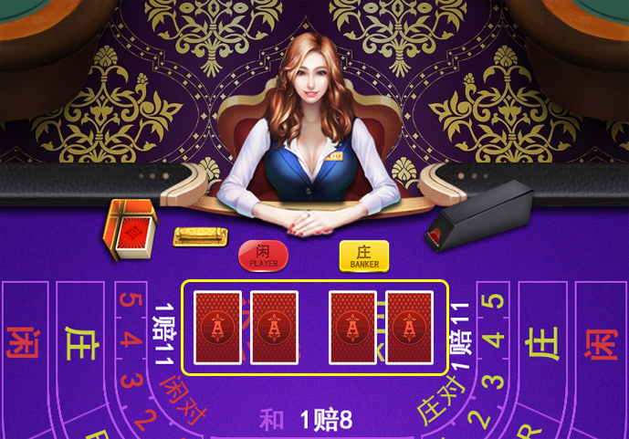
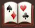
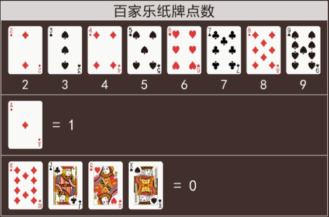
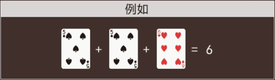
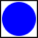
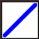

最初时，会发4张牌，以闲家-庄家-闲家-庄家的顺序各发2张。
每个玩家可以选择在闲家(Player)或庄家(Banker)的任何一方下注，并且点数总和接近9的一方为胜。所有下注的获胜方都将获得1比1的赔彩，但由于庄家有着更好的获胜几率，因此庄家获胜时，会收取5%的手续费。
2至9的所有纸牌点数都按标识的数字计算，而纸牌A的点数计算为1，纸牌10与图片纸牌的点数计算为0。
同理，所有纸牌的总和为10时，将计算为0。
除了在闲家或庄家下注方式外，还有其他的下注方式，如：
| 下注方式 | 赔率 |
| 和(tie) | 1赔8 |
| 闲家对子(Play Pair) (最初发给闲家两张牌是对子) |
1赔11 |
| 庄家对子(Bank Pair) (最初发给庄家两张牌是对子) |
1赔11 |
最初发牌结束后，荷官会根据当前点数总和的情况，判断是否追加发牌。
闲家的规则
| 点数为 | 闲家追加发牌的规则 |
| 0/1/2/3/4/5 | 追加一张牌 |
| 6/7 | 闲家停止发牌,但庄家会按需求追加第三张牌 |
| 8/9 | 游戏结束,闲家与庄家都会停止发牌.这既是所谓的"天牌" |
庄家的规则
如果闲家停止发牌（假设他的点数总和为6或7），庄家的追加发牌只取决于自己纸牌的点数，并以与闲家相同的规则进行追加发牌（0至5时，追加发牌；6或7时，停止发牌）。
如果闲家追加了第三张牌，庄家则会根据如下规则进行追加发牌：
| 点数为 | 庄家追加发牌的规则 |
| 0/1/2 | 无聊闲家的第三张牌是什么,都将追加一张牌 |
| 3 | 除了闲家的第三张为8外,都将追加1张牌(闲家第三张牌为8时,庄家停止发牌) |
| 4 | 如果闲家第三张牌为2,3,4,5,6,7,将追加1张牌 |
| 5 | 如果闲家第三张牌为4,5,6,7,将追加1张牌 |
| 6 | 如果闲家第三张牌为6,7，将追加1张牌 |
| 7 | 停止发牌 |
大路是最常见，并且最受玩家欢迎的一种记录形式。 玩家可以通过大路来分析游戏的趋势，并且还可以根据该趋势进行下注。 大路按照庄一列、闲一列的形式换列排列。出现和时，不会换列，并且会用一条绿色斜线(或圆，上图为隐藏模式)进行表示。
图标说明：
分别表示庄/闲/和未能获胜局
分别表示庄/闲/和获胜局
左上方红点表示庄对/ 右下方蓝点表示闲对/
表示同时出现庄对与闲对
大眼仔路是为了分析大路的规则性而产生的记录形式。
大眼仔路的起始点是以大路的第2列第2行开始分析记录(如果该位置没有结果，则以第3列第1行开始分析)。
在大眼仔路中的 颜色与庄、闲无关，只表示 大路的规则性。 ( - 表示有规则； - 表示无规则 )
大眼仔的路记录规则：
1) 在大路中出现直落的情况，以最后结果为标准，水平方向与前列相比较。如整齐，则表示有规则；反之，无规则。（但，如果有2行或2行以上不整齐时，则表示有规则）
2) 在大路中出现换列的情况，以最后结果为标准，比较前列与前2列。如整齐，则表示有规则；反之，无规则。
小路是为了分析大路的规则性而产生的记录形式。 小路的起始点是以大路的第3列第2行开始分析记录(如果该位置没有结果，则以第4列第1行开始分析)。
在小路中的 颜色与庄、闲无关，只表示 大路的规则性。 ( - 表示有规则； - 表示无规则) 小路的记录规则： 1) 在大路中出现直落的情况，以最后结果为标准，水平方向与前2列相比较。如整齐，则表示有规则；反之，无规则。（但，如果有2行或2行以上不整齐时，则表示有规则）
2) 在大路中出现换列的情况，以最后结果为标准，比较前列与前3列。如整齐，则表示有规则；反之，无规则。
曱甴路是为了分析大路的规则性而产生的记录形式。曱甴路的起始点是以大路的第4列第2行开始分析记录(如果该位置没有结果，则以第5列第1行开始分析)。
在曱甴路中的颜色与庄、闲无关，只表示大路的规则性。( - 表示有规则； - 表示无规则)
曱甴路的记录规则：
1) 在大路中出现直落的情况，以最后结果为标准，水平方向与前3列相比较。如整齐，则表示有规则；反之，无规则。（但，如果有2行或2行以上不整齐时，则表示有规则）
2) 在大路中出现换列的情况，以最后结果为标准，比较前列与前4列。如整齐，则表示有规则；反之，无规则。
珠牌路是将游戏结果以 每列6格，依次进行排列的记录形式。 其记录方向为从上至下、从左至右。
预测值所表示的是在下一局出现庄或闲时，大眼仔路、小路、曱甴路中，各自所显示的规则性。
(注):其颜色与庄、闲无关